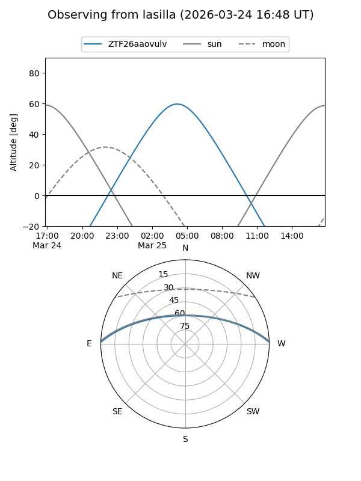
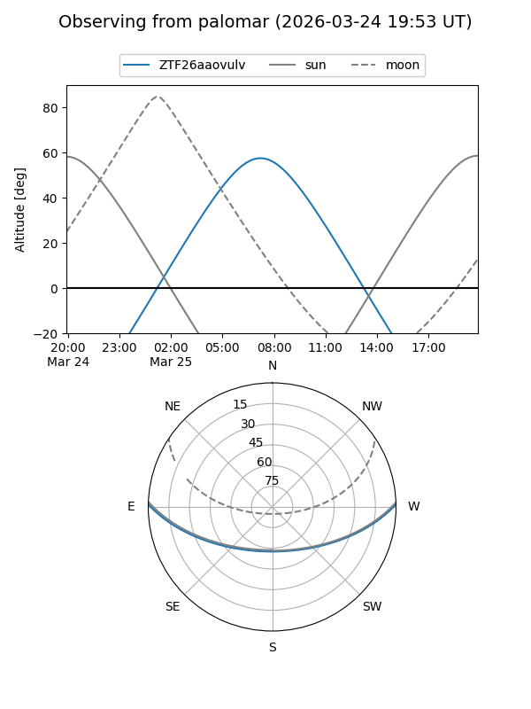

ZTF26aaovulv
Target ZTF26aaovulv at 2026-03-25 09:43
Aliases and brokers:
FINK: link
Lasair: link
ALeRCE: link
alt names
ZTF26aaovulv (ztf,fink_ztf)
Coordinates:
equatorial (ra, dec) = 173.7910,+1.12200
equatorial (HMS+DMS) = 11:35:09.85,+01:07:19.22
galactic (l, b) = (264.6226,+58.20308)
Flags:
Photometry:
last ztfg=17.60
1 ztfg detections
Lightcurve
Visibility


Additional plots